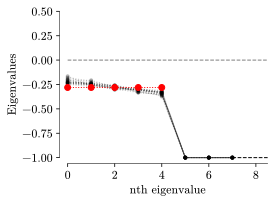
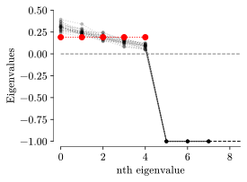

2 Neural field toy model and simulations
In this chapter, we introduce a toy model so that we can later study the mappings of embedding spaces. We stress that this toy model serves only for illustration purposes, and our results apply to any neural field. For this reason, we only cite or give short derivations of results used to understand the model, and the influence of the mappings that are later applied to it.
2.1 Networks of neurons to neural fields
2.1.1 Low-rank networks of neurons
The toy model we introduce is an instance of a low-rank neural network. Such models hold their name from the form of their connectivity matrix, which has a rank \(p\). We write the connectivity matrix as follows:
\[ J_{ij} = \frac 1N \sum_{\mu=1}^p F_{\mu i} G_{\mu j}. \tag{2.1}\]
The geometric view of these networks is that the recurrent currents lie in a \(p\)-dimensional subspace of \(\mathbb R^N\) spanned by the linearly independant vectors \(\{\boldsymbol{F_1}, \cdots, \boldsymbol{F_\mu},\cdots, \boldsymbol{F_p}\}\) (where each \(\boldsymbol{F_\mu}=(F_{\mu 1}, \cdots F_{\mu N})\)), which therefore define a “natural” linear embedding (in the sense of [1]) of the neural population activity.
Recalling the notation from the introduction, the \(h_i(t)\) are neuron potentials (with initial condition \(h_i(0)\)), \(\phi : \mathbb R\mapsto \mathbb R^+\) is the monotonic increasing activation function, and we write the evolution equation for this network of neurons:
\[ \dot h_i(t) = \underbrace{-h_i(t)}_\text{exponential decay} + \underbrace{\frac 1N \sum_{\mu=1}^p \sum_{j=1}^{N} F_{\mu i} G_{\mu j} \phi(h_j(t))}_\text{recurrent current $I^\text{rec}_i(t)$}. \tag{2.2}\]
The exponential decay term describes how, in isolation, a neuron’s potential tends to zero, biologically corresponding to the decay of the membrane potential to its value at rest. The recurrent current term \(I^\text{rec}_i(t)\) describes the “currents” received by neuron \(i\) from all the other neurons in the network.
We would like to add a few remarks on the physical units of Equation 2.2. Strictly speaking, a prefactor \(\tau\) with units of \(\mathrm{seconds}^{-1}\) should be multiplied with \(\dot h_i(t)\) of units \(\mathrm{volt}\cdot\mathrm{seconds}^{-1}\), such that the left-hand side of the equation is consistent with the unit of voltage. Similarly, the activation function has units \(\mathrm{seconds}^{-1}\) and the connectivity matrix units of \(\mathrm{coulomb}\), and a multiplicative term \(R\) with units \(\mathrm{ohm}\) should multiply the recurrent currents in order to yield a voltage. By rescaling time or connection weights, both \(\tau\) and \(R\) can be set to one, and so we omit to write them.
In our model we make the simplifying assumption that there is no external current (we only study the autonomous dynamics of the system), but this does not hurt the generalizability of our results.
2.1.2 Gaussian low-rank network of neurons
Let us now specify the low-rank model introduced in the previous section, and use the model introduced in [2], which can be seen as a simple example of a “Gaussian mixture low-rank network” [3]. This paper defines the low-rank vectors \(F_{\mu i}\) such that each component independently samples a standard Gaussian (zero mean, unit variance). In other words, every neuron \(i\) samples a vector \(\boldsymbol{F_i} = (F_{1i}, \cdots, F_{pi})\) from the \(p\)-dimensional gaussian. We write
\[ \boldsymbol{F_i} = \boldsymbol{z_i},\ \boldsymbol{z_i} \stackrel{\text{iid}}{\sim} \rho(z_1, \cdots, z_p), \]
where
\[ \begin{aligned} \rho(z_1, \cdots, z_p) &= \prod_{\mu=1}^p \mathcal{N}(z_\mu) \\ \mathcal{N}(z) &= \frac{1}{\sqrt{2 \pi}} \mathrm{e}^{-\frac 12 z^2}. \end{aligned} \]
The vectors \(G_{\mu i}\) are defined as
\[ G_{\mu i} = \tilde\phi(z_{\mu i}) \stackrel{\text{def}}{=} \frac{\phi(z_{\mu i}) - \langle{\phi(z_{\mu i})}\rangle}{\mathrm{Var}[\phi(z_{\mu i})]}. \]
The motivation for this choice will be presented in a few paragraphs. Finally, the activation function remains to be defined. For simplicity, we take it to be the logistic function, although the following results are not sensitive to this choice,
\[ \phi(h) = \frac{1}{1 + \mathrm{e}^{-h}}. \]
Putting everything together, we get the following expression for the equation of evolution of the network of neurons:
\[ \dot h_i(t) = -h_i(t) + \frac 1N \sum_{\mu=1}^p \sum_{j=1}^{N} z_{\mu i} \tilde \phi(z_{\mu j}) \phi(h_j(t)) =: \mathrm{RHS}(h_1, \cdots, h_N). \tag{2.3}\]
We note that contrary to the model introduced in [2], which excludes the self-connection term by effectively setting \(J_{ii} = 0\), we do not do this, because it introduces a vanishing correction of order \(\mathcal{O}(1/N)\).
To understand this model better, we can analyze its fixed points and their stability. Here we summarize the results from the derivation presented in Appendix A. We use the notation \(h^\star\) to refer to fixed points of the network. The fixed points solve the roots of the evolution equation:
\[ \mathrm{RHS}(h^\star_1, \cdots, h^\star_N) = -h^\star_i + \frac 1N \sum_{\mu=1}^p \sum_{j=1}^{N} z_{\mu i} \tilde \phi(z_{\mu j}) \phi(h^\star_j) = 0 \]
- \(h^\star_i = z_{\mu i}\) is a stable fixed point for all \(\mu \in \{1,\cdots,p\}\). Additionally, because the Gaussian distribution is symmetric around zero, \(h^\star_i = -z_{\mu i}\) are also stable fixed points. We refer to these fixed points as the “pattern” fixed points, because the network of neurons “remembers” the vectors \(\boldsymbol{F_1}, \cdots, \boldsymbol{F_p}\).
- \(h^\star_i=0\) is an unstable fixed point. It corresponds to all the neuron potentials being set to zero.
The analysis of stability from Section A.3 can be summarized by the study of the eigenvalues of the matrix \(K_{ij} = J_{ij} \partial \phi(h^\star_j) - \mathrm{Id}_{ij}\).
- Taking Taylor expansions of the activation functions reveals that – at least up to order 3 – uneven powers tend to increase stability of the pattern fixed points (and reciprocally, decrease stability of the zero fixed point), and vice-versa for the even powers (with the notable exception of the constant offset, which doesn’t play a role in this analysis).
- A steeper slope at the origin of the activation function also seems to improve stability of the pattern fixed points. This corresponds to a sharper difference between the “inactive” (low potential) and the “active” (high potential) neurons.
- The spectrum of \(K\) is composed of \(p\) eigenvalues (labeled \(\lambda_\mu\) for all \(\mu\in\{1,\cdots,p\}\)) that depend on the fixed point, and \(N-p\) eigenvalues \(\lambda_\perp = -1\) corresponding to the orthogonal complement of the pattern fixed points.
In our case, this analysis in Taylor expansions was sufficient to explain the observed stability resulting from a logistic activation function.
We should however note that the results obtained in Appendix A are valid in the \(N \to \infty\) limit. A numerical analysis shows in Figure 2.1 that at \(N=1024\), the numerical eigenvalues approximate the analytical eigenvalues, and this correspondence improves when we take larger \(N\) (typically we will for the rest of this thesis take \(N > 10^4\)).


2.1.3 Emergence of structure in the networks of neurons
In the introduction, we introduced the convergence of a network of neurons to a smooth neural field when the embedding space is well-chosen. For our toy model, it seems natural to try to embed the neurons according to their positions on the \(p\)-dimensional Gaussian.
2.1.3.1 Numerical aspects of simulating a low-rank network of neurons
We first demonstrate what happens with numerical simulations in the simple case of \(p=1\). We generate a network of 50,000 neurons, where each neuron samples a one-dimensional Gaussian to get its position in the embedding. The function \(\tilde \phi\) is computed by rescaling \(\phi\) with the numerically computed mean and variance.1
Instead of numerically computing the full connectivity matrix \(J\) (which would require storing \(N^2 = 50,000^2 \sim 10^{10}\) entries, taking about 40 GiB if we use 32-bit floating point numbers… yikes!), we take advantage of its low-rank structure to compute recurrent currents, therefore only storing \(p \times N\) numbers instead of \(N^2\).2
2.1.3.2 Naive and natural embeddings for \(p=1\)
Initially, we set all the potentials to zero, then simulate the differential equation by using the Runge-Kutta of order 4 integration schema (see scipy.integrate.solve_ivp). In Figure 2.2, we show the resulting dynamics for a few thousand neurons. We order the neurons as they appear in the numerical array (a naive “random” one-dimensional embedding), and compare this to the ordering of neurons by their sampled position \(z_1 \sim \mathcal{N}\).
The results of the simulation show that the random ordering of the neurons does not yield a smooth embedding, in contrast to the smooth surface that appears when we order the neurons by their position \(z_{1i}\). The simulation serves as a demonstration that the neurons converge to the stable fixed point \(h^\star_i = z_{1i}\), as well as confirming that the zero fixed point is unstable. Indeed, despite the zero initialization, the simulation did not stay there because small numerical fluctuations were amplified by the instability.
The observed smooth surface corresponds to the activation function \(\phi(h^\star) = \phi(z_1)\). Therefore, the Gaussian patterns define a natural embedding of the network, and the neural field at the fixed point reads \(h^\star(z_1, t) = z_1\). We can write the neural field equation for \(p=1\) in the Gaussian embedding as
\[ \partial_t h(z_1, t) = -h(z_1, t) + \int_{\mathbb R} z_1 \tilde\phi(y_1) \phi(h(y_1, t)) \mathcal{N}(\mathrm dy_1). \tag{2.4}\]
2.1.3.3 A natural embedding for \(p=2\)
Because Equation 2.4 already involves a one-dimensional integral, the \([0,1]\) embedding can easily be found by applying rescaling methods, such as the inverse CDF method described in Section 2.5 later in this chapter.
The question of finding a one-dimensional embedding becomes non-trivial when we consider \(p>1\), here we take \(p=2\). In Figure 2.3, we repeat the same simulations as in the previous section. Again, the structure of the network emerges naturally as a smooth surface in \(\mathbb R^2\).
We however note that in this case, there are two pattern fixed points that the network can converge to. In the example given here, the network coincidentally converged again to the first pattern fixed point. We see this because the neural field is constant in the \(z_2\) direction. We write the fixed point \(h^\star(z_1, z_2, t) = z_1\). The neural field is now written as
\[ \begin{aligned} \partial_t h(z_1, z_2, t) &= -h(z_1, z_2, t)\\ &+ \int_{\mathbb R} \left(z_1 \tilde\phi(y_1) + z_2 \tilde\phi(y_2)\right) \phi(h(y_1, y_2, t)) \mathcal{N}(\mathrm dy_1) \mathcal{N}(\mathrm dy_2). \end{aligned} \tag{2.5}\]
More generally, we can write the \(p\)-dimensional neural field, where \(\boldsymbol{z} \in \mathbb R^p\):
\[ \begin{aligned} \partial_t h(\boldsymbol{z}, t) &= -h(\boldsymbol{z}, t) + \int_{\mathbb R^p} w(\boldsymbol{z}, \boldsymbol{y}) \phi(h(\boldsymbol{y}, t)) \mathcal{N}^p(\mathrm d\boldsymbol{y}) \\ w(\boldsymbol{z}, \boldsymbol{y}) &= \sum_{\mu=1}^p z_\mu \tilde\phi(y_\mu) \\ \mathcal{N}^p(\mathrm d\boldsymbol{y}) &= \frac{\mathrm{exp}(\frac12\sum_{\mu=1}^p y_\mu^2)}{(2\pi)^{p/2}} \mathrm{d} y_1 \cdots \mathrm d y_p. \end{aligned} \tag{2.6}\]
2.2 Simulation schemes for neural fields
Now that we have introduced the analytical neural fields, let us discuss how we can simulate them numerically, more specifically how we can estimate the \(p\)-dimensional integral.
2.2.1 Sampling method (Monte Carlo integration)
Due to the formulation of the neural field weighted by a probability distribution \(\rho(y_1, \cdots, y_p)\), a natural way to estimate the integral is by Monte Carlo integration. The essence of this method is to use the Central Limit Theorem, where we take \(N\) independent samples \(\boldsymbol{y_i} = (y_{1i}, \cdots, y_{pi})\) from the distribution \(\rho\), and use them to estimate the integrand \(I(\boldsymbol{z}, \boldsymbol{y})\).
\[ \begin{aligned} \mathcal{I}(\boldsymbol{z}) &= \int_{\mathbb R^p} \underbrace{w(\boldsymbol{z}, \boldsymbol{y}) \phi(h(\boldsymbol{y}, t))}_{I(\boldsymbol{z}, \boldsymbol{y})} \rho(\mathrm d\boldsymbol{y}) \\ \hat{\mathcal{I}}(\boldsymbol{z}) &= \frac 1N \sum_{i=1}^N I(\boldsymbol{z}, \boldsymbol{y_i}), \, \boldsymbol{y_i} \stackrel{\text{iid}}{\sim} \rho \end{aligned} \tag{2.7}\]
Applying the Central Limit Theorem, we get that the estimation \(\mathcal I(\boldsymbol{z})\) from Equation 2.7 has a convergence rate of \(\mathcal{O}(1/\sqrt{N})\), since
\[ \begin{aligned} \mathrm{Var}\left[\hat{\mathcal{I}}(\boldsymbol{z}) \right] &= \frac 1N \mathrm{Var}_{\boldsymbol{y} \sim \rho}[I(\boldsymbol{z}, \boldsymbol{y})]. \end{aligned} \]
2.2.2 Grid method (Trapezoidal integration)
Another method to estimate an integral numerically is by discretizing the integrand on a regular grid. We simply state the well-known result that the convergence rate of the estimation is \(\mathcal{O}(N^{-2/p})\). Interestingly, the convergence rate depends on the dimension \(p\) of the integral. For \(p \geq 4\), Monte-Carlo integration shows better scaling behaviour (but depending on the use case, prefactors of the error can change which method is better).
In our case, since the distribution \(\rho(z_1, \cdots, z_p)\) can be factorized into the product of \(p\) independent Gaussian distributions, we can decouple the \(p\)-dimensional integral into the product of \(p\) one-dimensional integrals. Then the error estimation of the integral scales as \(\mathcal{O}(N^{-2})\). For this reason, we use the grid method for the remainder of this thesis.
2.3 Characterizing dynamics of the low-rank neural field
We now introduce some tools that will help us understand the toy model. We stress that in general, other neural field models might not have this luxury, and that we only make use of these tools to help explain the dynamics of the simulated neural fields. The overlaps and projections introduced here are only computed from the results of the simulation (see overlap.py in the source code).
2.3.1 Overlap variables
Overlap variables in continuous time were introduced by [4] to study spiking networks models of associative memory (Hopfield-type networks), which can be seen as a low-rank network with discrete spatial structure instead of our continuous \(\boldsymbol{z}\). The overlap variables measure the correlation between the state of the network (the value of the potential \(h(\boldsymbol{z}, t)\) at each point in space) and the pattern fixed point.
For the network for neurons, we write the overlap with the pattern \(\mu\) as
\[ \begin{aligned} m_\mu(t) &= \frac 1N \sum_{i=1}^N \tilde \phi(z_{\mu i}) \phi(h_i(t)) \\ &\xrightarrow{N \to \infty} \int_{\mathbb R^p} \tilde \phi(z_\mu) \phi(h(\boldsymbol{z}, t)) \mathcal{N}^p(\mathrm d\boldsymbol{z}). \end{aligned} \tag{2.8}\]
We note that similarly to [4], we can write the dynamics of the neural field in terms of the overlap variables:
\[ \partial_t h(\boldsymbol{z}, t) = -h(\boldsymbol{z}, t) + \sum_{\mu=1}^p z_\mu m_\mu(t). \tag{2.9}\]
This formulation “hides” the integral inside the overlap variables, but one should not forget that the overlaps depend on the neural field at any given time.
2.3.2 Low-rank neural fields as \(p\)-dimensional closed systems
Equation 2.9 hints towards the possibility of writing the dynamics of the low-rank system as a closed system of \(p\) variables. As explained in Section 2.1.1, the recurrent currents span a \(p\)-dimensional subspace, and the orthogonal component behaves independently. This motivates the formulation of a \(p\)-dimensional closed system.
We refer to [5], section 4.3 for the reduction of general low-rank networks to \(p\)-dimensional closed systems, and give the equations applied to our toy model. Defining the projections \(\kappa_\mu(t)\) of the neural field onto the patterns
\[ \kappa_\mu(t) = \int_{\mathbb R^p} y_\mu h(\boldsymbol{y}, t) \mathcal{N}^p(\mathrm d\boldsymbol{y}), \tag{2.10}\]
we can decompose the neural field onto the basis of patterns (mathematically, the patterns form an orthonormal basis of functions):
\[ h(\boldsymbol{z}, t) = h^\perp(\boldsymbol{z}, t) + \sum_{\mu=1}^p \kappa_\mu(t) z_\mu. \]
The orthonormal component \(h^\perp(\boldsymbol{z}, t)\) is independent of the rest of the system and decays exponentially. Then, the equations of evolution for the projections are given by the following closed system:
\[ \begin{aligned} \dot \kappa_\mu(t) &= -\kappa_\mu(t) + \int_{\mathbb R^p} \tilde\phi(y_\mu) \phi(h(\boldsymbol{y}, t)) \mathcal{N}^p(\mathrm d \boldsymbol{y}) = -\kappa_\mu(t) + m_\mu(t) \\ \kappa_\mu(0) &= \int_{\mathbb{R}^p} y_\mu h(\boldsymbol{y}, 0) \mathcal{N}^p(\mathrm d \boldsymbol{y}), \end{aligned} \]
and the orthogonal component evolves according to
\[ \begin{aligned} h^\perp(\boldsymbol{z}, t) &= h^\perp(\boldsymbol{z}, 0) \mathrm e^{-t}\\ h^\perp(\boldsymbol{z}, 0) &= h(\boldsymbol{z}, 0) - \sum_{\mu=1}^p \kappa_\mu(0) z_\mu. \end{aligned} \]
The set of \(\kappa_\mu(t)\) defines a trajectory in a \(p\)-dimensional latent space. We note that similarly to Equation 2.9, the overlaps intervene in the equations of evolution, and carry the information on the neural field.
Additionally, it can be seen from the expression of the overlaps in Equation 2.8, that in the case of a linear activation function \(\phi(h) = c_0 + c_1 h\), we have the equality \(m_\mu(t) = \kappa_\mu(t)\).
2.4 A cycling neural field
In Section 2.1 we introduced a simple toy model of a neural field with a natural embedding on the \(p\)-dimensional Gaussian. Analytical derivations accompanied by numerical simulations showed the dynamics of this model can be summarized by the convergence to pattern fixed points. In this section, we modify the toy model minimally, such that we can observe more interesting behaviour in the form of cycling.
We modify Equation 2.6 in two ways:
- We define a time delay \(\delta\) with which a neuron will “wait” before reacting to a change in its potential.
- We define “rolling” as the response of a neuron to shift towards the “next” pattern given its state matching a current pattern. This is done by adding a shift \(\mu+1\) in the connectivity kernel, with the convention \(p+1=1\) (see [6], Chapter 5).
The resulting cycling neural field is written as such:
\[ \partial_t h(\boldsymbol{z}, t) = -h(\boldsymbol{z}, t) + \sum_{\mu=1}^p \int_{\mathbb{R}^p} z_{\mu+1} \tilde \phi (y_\mu) \phi(h(\boldsymbol{y}, t - \delta)) \mathcal{N}^p(\mathrm d \boldsymbol{y}) \tag{2.11}\]
The geometric intuition behind this formulation is that now the recurrent currents are “rotated by half a turn” (around the axis normal to the plane \((z_\mu, z_{\mu+1})\)) in the embedding. When the network is at a pattern fixed point \(\mu\), the recurrent drive will then push it towards the pattern \(\mu+1\). Figure 2.4 shows the difference in the behaviour of the original and the cycling neural field.
We note however that Equation 2.11 no longer is a partial differential equation, but rather a delayed differential equation, which are in general much more complicated to solve. We make a simplifying assumption to extend the initial condition back in time, such that \(h(\boldsymbol{z}, t < 0) = h(\boldsymbol{z}, 0)\) is a constant function. Numerically, the delayed partial differential equation also means that we have to store a history of the neural fields instead of only the current one. Since the solve_ivp method dynamically adapts the timestep of integration, we use linear interpolation between two known points in the stored neural field states to estimate \(h(\boldsymbol{z}, t-\delta)\) (see lagging.py and its use).
With these considerations, we simulate a \(p=2\) cycling neural field with \(\delta=6\) (since the membrane time constant has been fixed to one, this means that \(\delta = 6\tau = 6\)) and initial condition \(h(z_1, z_2, t < 0) = z_1\) in Figure 2.5. The latent trajectory is estimated from the simulation results, and animated simultaneously with the neural field. We clearly see the oscillations between the patterns \(\mu=1\) and \(\mu=2\).
Relating to Section 2.3.2, the dynamics of the projection now read:
\[ \dot \kappa_\mu(t) = -\kappa_\mu(t) + m_{\mu+1}(t - \delta). \]
2.5 Mapping \(\mathbb R^2\) to \([0,1]^2\) using the CDF
In preparation to the next chapter, we first map the 2-dimensional neural field equation in \(\mathbb R^2\) to \([0,1]^2\), and, in general \(\mathbb R^p\) to \([0,1]^p\). There are many ways to do this by using functions \(\mathbb R\mapsto [0,1]\), but a practical choice is the Gaussian CDF (Cumulative Density Function), because it has the benefit of absorbing the density into the kernel, in the sense that the integral \([0,1]^p\) becomes weighted by the uniform distribution. The one-dimensional Gaussian CDF is defined as
\[ \mathrm{CDF}(z) = \int_{-\infty}^z \mathcal{N}(\mathrm dy) \]
and maps \(\mathbb R\) to \([0,1]\),3 as pictured in Figure 2.6.
Defining the change of variables \(v_\mu=\mathrm{CDF}(z_\mu), u_\mu=\mathrm{CDF}(y_\mu)\), we can define the neural field \(h_U\) and the connectivity kernel \(w_U\) for the uniform distribution as
\[ \begin{aligned} h_U(\boldsymbol{v}, t) &= h(\mathrm{CDF}^{-1}(\boldsymbol{v}), t) = h(\mathrm{CDF}^{-1}(v_1), \cdots, \mathrm{CDF}^{-1}(v_p)) \\ w_U(\boldsymbol{v}, \boldsymbol{u}) &= w(\mathrm{CDF}^{-1}(\boldsymbol{v}), \mathrm{CDF}^{-1}(\boldsymbol{u})). \end{aligned} \tag{2.12}\]
After the change of variables, the neural field in \([0,1]^p\) is equivalent to the neural field in \(\mathbb R^p\), and its equation reads
\[ \partial_t h_U(t, \boldsymbol{v}) = -h_U(t, \boldsymbol{v}) + \int_{[0,1]^p} w_U(\boldsymbol{v}, \boldsymbol{u}) \phi(h_U(t, \boldsymbol{u})) \mathrm d \boldsymbol{u}. \]
Defining the neural field in \([0,1]^p\) also addresses the problem that we tried to hide in Section 2.2.2 relating to the difficulties of defining a grid on \(\mathbb R^p\). With the integral on \([0,1]^p\), we can simply use a uniform grid, which maps back to samples in \(\mathbb R^p\) by using the inverse CDF, as shown in Figure 2.7.
We make the final remark that this method of mapping \(\mathbb R^p\) to \([0,1]^p\) by using the CDF does not work for any neural field. In our case, we use the fact that the distribution factorizes into \(\rho(z_1, \cdots, z_p) = \rho_1(z_1) \cdots \rho_p(z_p)\), such that the components of \(\boldsymbol{v}\) are independent. We can then define the “componentwise CDF” that relates to the total CDF via
\[ \begin{aligned} \mathrm{CDF}(z_1, \cdots, z_p) &= \int_{-\infty}^{z_1} \cdots \int_{-\infty}^{z_p} \rho(\mathrm dy_1, \cdots, \mathrm dy_p) \\ &= \int_{-\infty}^{z_1} \rho_1(\mathrm dy_1) \cdots \int_{-\infty}^{z_p} \rho_p(\mathrm dy_p) \\ &= \mathrm{CDF}(z_1) \cdots \mathrm{CDF}(z_p) \\ &= v_1 \cdots v_p = \prod_{\mu=1}^p v_\mu. \end{aligned} \]
In the source code, implementation for this can be found under
notebooks/neurodyn/_rnn.py, in the methodLowRankRNNParams.new_sampled_valentin.↩︎See the implementation in
notebooks/neurodyn/_rnn.py, in the methodLowRankRNN.I_rec.↩︎Strictly speaking the image of \(\mathbb R\) is in \((0,1)\), but for simplicity we consider \(\mathbb R\cup \{-\infty, +\infty\}\) which maps to \([0,1]\). This is not fundamentally important, because numerically the infinities are never touched, and analytically the recurrent currents given by the integration vanish at infinity due to the Gaussian weighting.↩︎